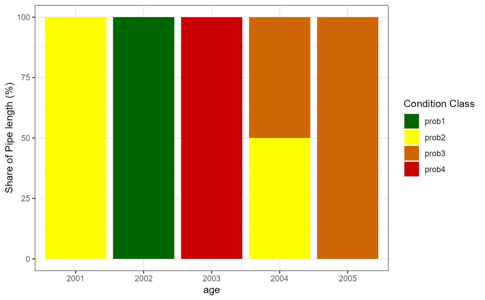
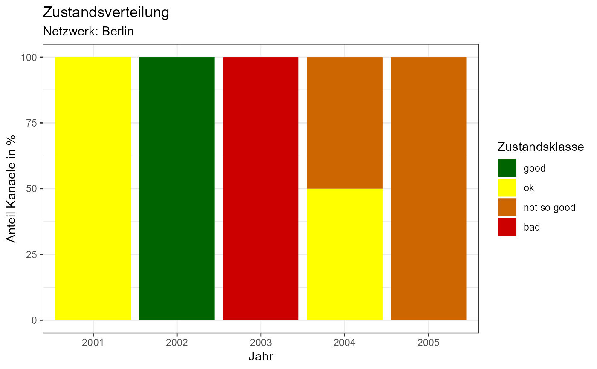

Generate gg-plot of Stacked Bars
Arguments
- x
matrix containing the bar heights
- x.sd
optional. Standard deviations.
- reverse
logical indicating whether to reverse the stack order
- ...
additional arguments passed to
gg_stacked_bars
Examples
values <- c(
0, 2, 0, 0, 0,
1, 0, 0, 2, 0,
0, 0, 0, 2, 5,
0, 0, 3, 0, 0
)
conditionStat <- matrix(values, nrow = 4, byrow = TRUE, dimnames = list(
condition = paste0("prob", 1:4),
year = 2001:2005
))
# Get the base plot
baseplot <- kwbGompitz::plot_stacked_bars(conditionStat, legend = "right")
# Show the base plot
baseplot

# Modify the base plot (titles, axis titles, legend title, legend content)
baseplot + ggplot2::labs(
x = "Jahr", y = "Anteil Kanaele in %", title = "Zustandsverteilung",
subtitle = "Netzwerk: Berlin"
) +
ggplot2::guides(fill = ggplot2::guide_legend("Zustandsklasse")) +
ggplot2::scale_fill_manual(
values = c("darkgreen", "yellow", "darkorange3", "red3"),
labels = c("good", "ok", "not so good", "bad")
)
#> Scale for 'fill' is already present. Adding another scale for 'fill', which
#> will replace the existing scale.
